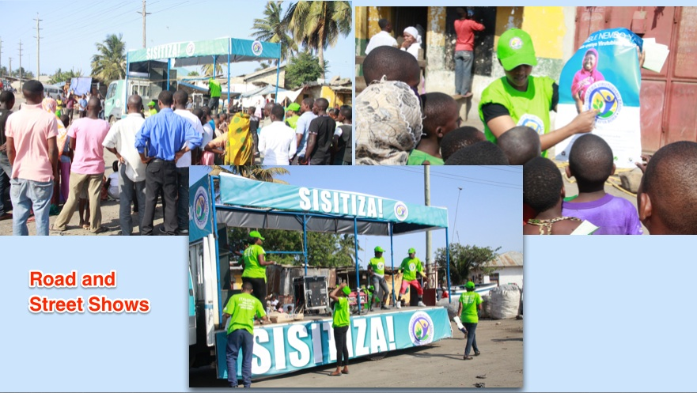

I'm an Entrepreneur and a Behavior Change Communication Expert with more than eight years of combined experience impacting corporate and social marketing performance through skillful integration of brand, business, and creative strategies with print and multimedia designs for the social marketing, entertainment and retail industries in Tanzania.
Massive experience in community-based activities and community mobilization, which includes developing community rallies and implementing community based approaches to address a number of health issues.
Technically innovative in my approach to program design and implementation and have developed Social Marketing and BCC strategies that truly lead the field. My role in my last employer has enabled them to manage and forge relationships with organizations such as PSI-Tanzania, USAID-Tanzania, Ministry of Health and Social Welfare plus other Local and International organizations
Specialties: Branding, Advertising & Social Marketing-Health Communications-Behavior Change Communications-B2B Marketing and Advertising.
The Social Marketing Campaign for the Rural Food Fortification Project focused on designing, developing, costing, implementing and supervising the state-of-art above-the-line and below-the- line campaign aimed at promoting the consumption (use and uptake) of fortified foods.
In its broad aspect the campaign was in line with the government of Tanzania goals and objectives in implementing the Food Fortification Action Plan and objectives of the social marketing campaign of (1) increasing consumer awareness and demand for fortified foods (2) creating ownership and active involvement of all relevant government agencies in implementing the Fortification Action Plan (3) stimulating and increasing industry (including hammer mills) participation at the production and retail levels.
We embarked on the national social marketing campaign with a three-tiered approach focusing on three main components that support and reinforce each other. These tiers include: community based initiatives, reinforcement initiatives and enabling environment.
Each tier had a set of activities making a total of seven key programmatic activities, supported by monitoring and evaluation, including: 1. Campaign material development 2. Mobilizing Community based volunteers 3. Mid media activities 4. Local government initiatives 5. Mass media activities focusing on regional/ local media houses 6. Improved interpersonal communication at health facilities 7. Point of production and sale materials and activities in hammer mills and markets.
Social Marketing Campaign was carried out in selected 6 pilot districts Iringa DC (254,034 persons), Kilolo (218,130 persons), Njombe Town Council (130,223 persons), Karatu (230,166 persons), Meru and Monduli (158,929 persons). The campaign specifically targeted LGA actors in nutrition at all levels, household decision makers, health facility workers, women of reproductive age and caregivers of children aged 6 to 59 months.
Our company was the lead implementer of the campaign in close collaboration with Ministry of Health and Social Welfare and Tanzania Food and Nutrition Centre and respective LGAs’ nutrition coordinators. A Team Leader was in charge of our campaign team composed of 10 professional staff in the fields of health promotion, social Marketing, Mass Communication, M&E as well as 6 program staff at district level.
The Team Leader provided overall campaign management and direction, and ensured successful achievement of specified tasks and activities. A significant part of his role involved maintaining liaisons with the Ministry of Health and Social Welfare focal person, LGA officials and partners, and to maintain a supportive environment for the campaign.
The activities that were implemented followed the tier approach as explained above. There were 3 tiers which included: community based initiatives, reinforcement and enabling environment.
The successful implementation based on among other things well designed BCC/ IEC materials that was used to reinforce the campaign. Low-literacy print BCC/IEC materials was developed to cover food fortification at hammer mills and use and uptake of Micronutrient Powders key messages. It took the form of one set of materials using graphics heavy approach, with easy to read information addressing all of the issues like below:
We provided powerful community-based social marketing activities that created awareness and increased demand of fortified maize flour at hammer mills and micronutrient powder for complementary food fortification through community dialogue and community- initiated actions, extended and supported by mid media activities:
This tier supported and reinforced community-based initiative to the general public through mass media. Mass media programming introduced essential knowledge; modeled positive attitudes and behaviors, encouraged household and community dialogue and announced special events. Innovative mass media messages were designed to create awareness to boost demand for fortified maize flour at hammer mills and micronutrient powder at health facilities. Mass media also was able to influence community and social factors. For instance, communities with successful activities were featured in mass media broadcasts in a local radio station. This type of public recognition provided motivation for communities to be actively engaged and act as a “model” for other communities to emulate, increasing the rate at which activities are diffused.
The aim of this was to create ownership and active involvement of all relevant government authorities in implementing the rural fortification project. Activities included:
In the short term, the social marketing campaign achieved the following results: (1)Designed and developed BCC/ IEC materials. (2)Created awareness and knowledge by mobilizing and training community members through Local Government Authorities and Community Health Workers as well as reinforcement activities. (3)Created an enabling Environment to promote use and uptake of fortified food products. In the long term as a result of the campaign, the local government authorities have developed effective and efficient systems to monitor availability and use of fortificants and Micronutrient Powders at the processing units and health facilities.
The overall goal of the Food Fortification Social Marketing Strategy was to improve consumer awareness of fortified foods and to ensure that business partners, including millers and retailers understand the value of fortification and are engaged in promoting consumption of fortified foods.
Specifically the objectives of the social marketing campaign were to: (1) Increase consumer awareness of fortified foods (2) Create ownership and active involvement of all relevant government agencies in implementing the Fortification Action Plan (3) Stimulate and increase industry participation at the production and retail levels.
The promotion activities planned centered on three social marketing items: (1) Products –specifically how to identify a fortified food product. (2) Place – where fortified food products are available. (3) Benefits of consuming fortified foods.
The interventions were piloted in five regions of the country i.e. Pwani (coastal), Eastern region – Dar es Salaam, Lindi Region, Mtwara Region and Tanga.
A food fortification harmonization meeting was held with National Food Forification Alliance (NFFA) partners with the aim of developing food fortification messages targeting the different audiences including: business partners (millers and retailers), men and women above 15 years of age and the policy makers (government agencies). The meeting was attended by 23 stakeholders on the 28th September, 2012 at the Picolo Beach Hotel –Kawe Dar es Salaam and thereafter finalization of messages was done through email and face to face consultations.
At the onset a technical training manual and other reference materials with simplified language were developed consultatively with input from relevant stakeholders. Once these were finalized, they were printed and used as the core curriculum for all the trainings conducted. Each participant trained received a copy for further reference and for use in their awareness creation activities. A total of 1200 copies of the training materials were printed and distributed in the various trainings and meetings conducted.
Training was conducted for regional and district health staff aimed at creating a credible reference point for women of reproductive age who attend ante natal clinic and health centers for general treatment to raise awareness on the benefits of using fortified foods and initiate discussions on fortified food by community members.
The main objective of training the district officials and religious leaders is they are considered as key influencers in decisions adopted by the community – they are gatekeepers. The training was therefore aimed at increasing their knowledge, dispel the myths associated with fortified foods and thus enhance knowledge on the benefits of fortified foods. Unless the gatekeepers are convinced of the benefits of fortified foods, so that they are actively involved in promoting fortified foods, the adoption rate by the community members would be very low.
Training of journalists and editors was aimed at building trust and make the media supportive of and communicates positive attributes of fortified foods. The training was conducted on 30th October 2012 at Ubungo plaza Hotel in Dar es Salaam. 46 journalists and editors from 9 radio stations, 7 TV stations and 19 newspapers were trained on: what is food fortification, why food fortification, legal aspects of fortification, Micronutrients, and social marketing strategy on fortified foods campaign.
These activities were aimed at creating awareness on using fortified food in the community. The focus was to educate people on the benefits of fortification of staple foods with micronutrients particularly for the vulnerable groups, especially infants and young children, pregnant and lactating women. These activations also enabled people to recognize the food fortification logo thus promoting the purchase of fortified foods.
Market places activations were conducted in all the four regions. These were held with the aim of creating awareness to the community especially in the market places where people sell all kinds of foods. The activities were attended by Nutrition officers from the districts and these were accompanied with a road show truck, dancers, master of ceremony to announce and educate on fortified foods.
Activation campaigns were conducted in various schools to create awareness to the pupils and also disseminate this knowledge to teachers, parents and other relatives. A large number of pupils and teachers were reached. They were given advocacy messages through IEC materials including the brochures, scratch cards, posters and fliers.
Cultural shows were conducted in all the four regions for the purpose of creating awareness to the community at the ward level. Cultural show activities were attended by the general communities, cultural officers and nutritionist officer from the district. The cultural shows were accompanied with traditional dance groups.
To create ownership and active involvement of all relevant government agencies and food manufactures in implementing the food fortification action plan the following activities were successfully conducted.
A meeting was conducted with key food vehicle manufacturers to create ownership and get their buy in on the Social Marketing strategy. This advocacy meeting for industries on food fortification was attended by representatives of industries sales teams. They were oriented on food fortification, its rationale and process, the regulatory framework and the social marketing strategy. It was important to orient the industries sales team so that they can strengthen the fortified food campaign as the millers organized their own marketing initiatives.
45 food vehicle manufacturers’ sales man/women were oriented on Food fortification as a low-cost and efficient strategy in the broader nutrient enhancement process and In light of the imminent enforcement of mandatory food fortification. The sales teams were a key channel to increase demand for fortified foods and increase industry participation at the production and retail levels on food fortification and create ownership and active involvement of the community.
A two days MPs seminar was held on 23rd to 24th March 2013 at Mawasiliano towers. A mix of MPs from different committees including industry and trade, health and social welfare, local government authority and other important committees were invited to ensure the food fortification message is known throughout the government arms.
The national large scale fortification programme of wheat flour and vegetable oil was launched by H.E. the President of United Republic of Tanzania Dr. Jakaya Mrisho Kikwete on 15th May, 2013. The Food fortification launch had a two pronged approach which involved an industrial launch and the national launch. The first day was hosted by BIDCO Company who show cased fortification of vegetable oils to the various stakeholders and the president, while the second day involved the community being sensitized on the fortification of foods with endorsement by the president.
To generate publicity and raise the profile of food fortification articles on fortified food were published at least once a month in newspapers. At least 25 articles were published though there were various other editorials related to food fortification.
In a bid to enhance community involvement in the food fortification activities, district based NGOs were sub-contracted for overseeing volunteers and community- based fortified food SBCC activities within the selected districts. An orientation meeting was held for the selected district based NGOs on the 27th Febuary ,2013 at Picolo Beach Hotel –Kawe Dar es Salaam, the induction and awareness creation was done by Tanzania Food and Nutrition Center, Tanzania Food and Drugs Authority and Hellen Keller International. Afterwards they assisted in the logistical organizations as well as supporting the campaigns at the district levels.
To-date, notably due to the launch of National Food Fortification campaign, and other regional based campaigns by other partners, have led to a record 35% decrease in stunting rate in Tanzania, I am very proud to be part of this campaign and will always be. I know the future generations will have benefited with the campaigns and efforts that we took to make it a success.
Neglected Tropical Diseases (NTDs) are a devastating burden for the people of Tanzania and are prevalent throughout the country, though certain areas of the country face more severe burdens than others due to geographic and environmental conditions. The country is endemic with five preventive chemotherapy diseases namely, Schistosomiasis, Lymphatic Filariasis, Onchocerciasis, Trachoma, and the soil-transmitted helminths (Hookworm, Ascariasis, And Trichuriasis). Such high prevalence rates of multiple NTDs increase the risk for co-infection with two or more diseases, a phenomenon that leads to more severe health consequences.
In line with NTD Strategic Master Plan (2012 - 2017), the goal of the BCC strategy formulation was to provide a framework for guiding NTD BCC actors and implementing partners for a well coordinated and sustained communication for strengthened advocacy, visibility and profile of NTD control programmes as well as creating awareness about NTD in Tanzania.
(1)Identify all necessary inputs to be used in developing effective communication strategy for Neglected Tropical Diseases.(2) Harmonization of messages to be used in all the communication materials.
In order to achieve above objectives we decided to propose a two-day workshop with the partners working in the NTD field. Chosing representatives in each affected region to be present in a workshop.
We decided on splitting into three groups that will discuss Onchocerciasis, Lymphatic filariasis and hydrocele for this day only. We had Six sessions in total. We dig into the previous campaigns and case studies, what worked and didn't work. The following are some of the things discussed in this day: Introduction to social marketing, its applicability in the NTD situation and how to integrate it in the campaign. Setting up communication goals and objectives, what is the Target Audience, how to identify and segment key stakeholders, and challenges and opportunities present. Messages versus proposed channels to be used and how to identify key communication tools, channels and techniques. Lastly, how to set and monitor timelines, milestones and indicators in action plan, and developing monitoring and evaluation mechanism designed to measure the results/outcomes identified in a communication strategy.
Same three groups but discussing a second set of diseases namely; Schistomiasis, stomach worms & Trachoma. We started off with revisiting day one, briefly and proceeded with the same six sessions as in day one.
Understanding the Audience: The primary audience is the person or group of people who are directly affected by a specific problem and thus addressed directly with specific messages with an intention to change their specific health behavior . Additionally, secondary audience is the person or group of persons who could have direct or indirect influence to the primary audience
The promotion of recommended behaviors: Community health workers (CHWs) are central in promoting recommended behavior at the grassroots level through home visits where they will use negotiation to encourage the family to change their practices and adopt the recommended behaviors. The CHW will use the visual materials to reinforce and standardize the message.
Home visits: A personal visit to the home by a respected neighbour may be one of the best ways to change individual behavior of someone long term. The home visit allows the community worker to regularly observe NTDs related behavior for the family with special focus to the children under 5 years. The home visit offers the opportunity to urge target group to try a new behavior specifically those related to WASH.Once the recipient have accepted to try out the new behavior, the CHW will do a follow-up visit to ensure that consistency trial of the new recommended practice and to help resolve problems that may have been experienced. Once the behavior becomes adopted by the family, the CHW select’s a new appropriate recommendation and begins to negotiate to try out the new behavior.
Negotiation for adoption of recommended hygiene practices: The CHW asks questions about hygiene practices, and observes the location of hand washing stations and soap, for example. Then the counselor negotiates the trial of an appropriate recommendation.
Training of Health Workers: Health workers will be trained in the NTD prevention & control package, enabling them to reinforce the messages that are being promoted by the CHW. During the training the roles of health workers will be clarified and the potential links between CHW and health workers in NTD prevention and control will be defined.
Hygiene strategies: Strategies will promote hygiene through demonstrations and negotiation during home visits, talks and demonstrations at model farm sites and use of counseling cards. Theater sketches will be considered as a very effective way of introducing somewhat embarrassing subjects to the discussion.
Training of Teachers: School teachers (head teacher and health teacher) will be trained in NTD prevention enabling them to promote school-based hygiene, sanitation, and de-worming treatment compliance.
Theater: Using drama is a very effective way of introducing new practices and getting people to consider that the new practices might work for them.
Radio & TV: Radio spots and interactive program can be very effective in introducing new concepts and new practices. This channel has wider coverage and reach thus key in promoting easy to adopt behavior like turn out during mass drug distribution, face washing and causes of NTDs in general.
Visuals and training manuals: Communicating NTD prevention and control requires training manuals and visual materials to be developed and/or adopted. A dedicated team will need to examine each materials developed to see if it covers the message for each recommended behavior and if it is sufficient and can be easily adopted. If no materials exist, then new cards will have to be developed for each concept or recommended behavior.
Monitoring shall be an ongoing process guided by a set of tools including, but not limited to, a monitoring checklist. Evaluation, on the other hand, would be conducted on a periodic basis to determine whether or not the objectives have been reached. Evaluation shall measure outcome indicators, including but not limited to message recall, changes in attitude and or intentions, and behavior. Data for evaluation shall come from small-scale, community-based surveys or other special data collection activities. The indicators identified are process and outcome indicators, which are pertinent to the realization of the behavioral objectives. Coverage of communication activities will be measured (numerator: number of schools/ regions/ districts/ wards/villages where at least one activity was carried out, denominator: targeted number of schools/ regions/ districts/ wards/ villages in the implementation area). Knowledge, attitudes and practices will be measured to assess the effectiveness of the communication activities. Other performance indicators that will measure the performance of communication activities will include program coverage, epidemiological coverage, geographical coverage and school coverage.
Social marketing for district based Tuboreshe Chakula Campaign Launches had its roots from the National Food Fortification Campaign launch as a way of echoing Presidential Call to Action for Nutrition that happened in May 2013. Presidential Call strengthened the efforts of addressing malnutrition challenges in Tanzania as they have been highlighted in the National Nutrition Strategy with food fortification being highlighted as among the interventions to address vitamin and mineral deficiencies.
The implementation followed 3 tier approach as had been for other similar campaign engagements and had three main objectives: (1) To create awareness in the general public on the seriousness of the national nutrition situation, especially the magnitude of micronutrient deficiencies. (2) To provide powerful community-based social marketing activities that create awareness and increase demand of fortified foods and Virutubishi (Micronutrient Powders) for improving the nutritional quality of complementary food fortification through community dialogue and community-initiated action, extended and supported by mid media activities and (3) To engage and create ownership of all involved gate-keepers in raising awareness for enhanced nutrition actions targeting care givers of children aged 6 – 59 months.
Tuboreshe Chakula had been working in the eight districts for which the campaign launches were to be carried out, these were: Babati, Kiteto, Kongwa, Dodoma, Kilombero, Mvomero, Morogoro, Unguja urban West and Pemba Micheweni, in four regions of Manyara, Dodoma, Morogoro and Zanzibar.
As the lead implementer of the campaign, working in close collaboration with Tuboreshe Chakula district based staff in each region, we split into two teams, each team working separtely in their respective ditricts. In order to ensure consistency of the approach, however, we started off working together as one team in Babati on 17th February 2014, a debriefing conducted afterward and allowed teams to split so as to allow concurrent district launches to happen.
The campaign launches activities centred on the following: (1) Healthy benefits of Virutubishi (Micronutrient Products) for increased uptake. (2) Addressing the prevailing misconceptions about Virutubishi (Micronutrient Products) and (3) Availability of Virutubishi (Micronutrient Products) and where they can be bought/ found.
We developed messages and BCC/ IEC materials including fliers, flags, ABS boards, pull up banners, back drop banners, and t-shirts. We came up with a slogan for the campaign which was Afya Bora ya Mwanao, ni Jukumu Lako (Better health of your child is your responsibility). Alongside the slogan, there were three categories of messages:
Generic messages that were used in the fliers/flags for insisting the use of Virutubishi (Micronutrient Products) to child between 6 – 59 months while emphasizing on exclusive breastfeeding for children under 6 months like the one above.
Messages for shops and markets/market places in the ABS boards that indicate the availability of Virutubishi (Micronutrient Products) and..

Messages in the pull up banner and backdrop banners that communicated benefits of using Virutubishi (Micronutrient Products) for children of 6 – 59 months.
A total of 10 district based launches were conducted in the project areas and it happened at a ward level and attended by district level management. The selection of a place for conducting the launch was based on population of the location, proximity between residence and community and security level of the area.
Interactive radio discussions with benefits of Virutubishi, uses of Virutubishi, food fortification in general, and objective of the campaign were held in every major radio station in every region, where 2 radio spots were designed, produced and only one radio spot was aired. During the campaign time a total of 10 sessions were held for interactive/ interviews shows and one Television interview, and 80 spots were aired in 8 radio stations.
The training was conducted to Local Government officials, Religious leaders, and other stake holders. Gatekeepers are most influential people in the community such as religious leaders, Ward Executive Officers, Councilors, Village Chairman, and Village Health Workers etc. The main role of gatekeepers is to prevent backlash from the community, since are the most trusted people in the community whom people seek advice from them in most matters, and in total of 367 people participated in all districts of which 159 were district officials and 179 village officials. In addition 27 religious leaders were oriented representing both Christian and Muslim faith.

Successful launch in 10 areas with active participation from Tuboreshe Chakula team, district councils and communities, including participation of Presidents’ Office and Tanzania and Food Nutrition Center management.
Media coverage: during the campaign a total of 27 articles/ features were published in 13 major Newspapers in Tanzania.
There's an estimated 3.5 million Tanzanians who lack prescribed glasses. KIBO, was a new affordable eyewear range with socially conscious aims, named after one of the three volcano cones of Mt Kilimanjaro.
The main and only objective for the spectacle brand campaign launch was to combine all efforts of the private sector optometrists through Tanzania Optometrists Association to respond to an estimated 3.5 Million people who lack prescribed glasses, by providing a new reliable source of low-cost, quality eyewear.
Since this was a one-day launch in a city of Dar Es Salaam, we had two tier approach to the campaign.These two tiers included a following set of activities: Pre launch, Launch, After Launch and Mid media activities.
We ran a series of activities including press conference one day prior to the launch day. Hosting radio discussions with Tanzania Optometrists Association plus live Q&A on both regional and national radio stations. In order to generate interest in the campaign and the product launch itself, roadshows and street activations were also conducted across three districts of Temeke, Kinondoni and Ilala for two weeks consecutively.
Here's how the schedule looked like at a glance
A series of Newspaper articles and blog coverage was conducted in the next following three months after the launch.
Logo design for the National Food Fortification program. The logo was to be used in all communication materials for the program plus the manufacturers when labeling their fortified products.
Design concepts for the outdoor materials like billboards and posters that were used in the National Food Fortification campaign. This was first phase of the campaign in which introduction of the logo and benefits of the fortified products were introduced and listed on all communication materials.
360-Marketing for Kibo Eyewear Product Launch in Dar Es Salaam.
EngenderHealth concept for vunja ukimya-break the silence campaign.
Concept design & Development of IEC and low literacy materials for the Rural Food Fortification campaign.
Design work for Johns Hopkins University’s, JHPIEGO and mHealth-CDC supported safe motherhood campaign (branded as Wazazi Nipendeni).
Concept and design work for Ecobank new customer-acquisition campaign dubbed "Win BIG with Ecobank".
Initial concepts and design for PrecisionAir-Kenya Airways partnership campaign launch.
Design and print work for KCB Bank marketing materials targeting their different customer segments.
Below is one of the video we produced in-house as part of the mass media campaign for Wazazi nipendeni:
And another one below:
Presidential Call for Action on Nutrition in May 2013 that we turned into a TVC to be aired on National Televisions countrywide.
Audio narration that was used as a Radio spot as well as part of mid-media activities during Home-based rural food fortification campaign under USAID-Tuboreshe Chakula.
And another One: